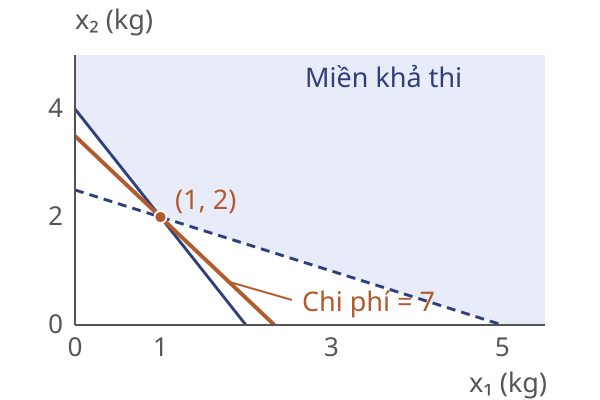
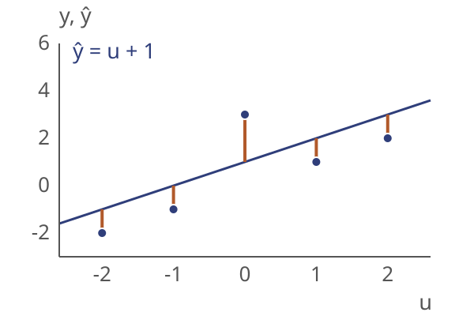
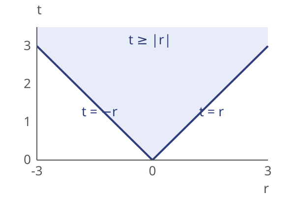
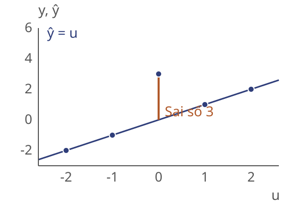
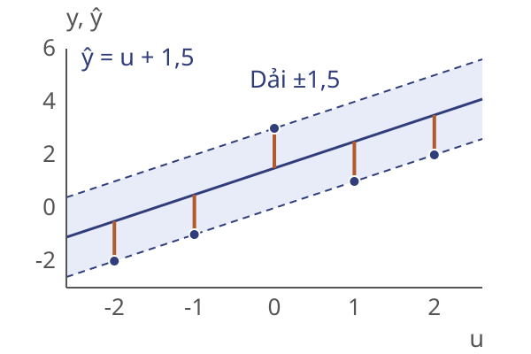

Viện Trí tuệ nhân tạo
Năm học 2026–2027 · Học kỳ 1
Biến quyết định $x\in\mathbb{R}^n$.
Hàm mục tiêu
$f_0:C\to\mathbb{R}$ là hàm lồi.
Tập khả thi
$C\subseteq\mathbb{R}^n$ là tập lồi.
Biến quyết định $x\in\mathbb{R}^n$.
$f_0,f_1,\ldots,f_m$ là các hàm lồi.
Đẳng thức affine: $A\in\mathbb{R}^{p\times n}$, $b\in\mathbb{R}^p$.
Các ràng buộc trên xác định tập khả thi $C$ lồi.
Tập khả thi: $C=[0,1]$ là đoạn lồi.
Hàm mục tiêu: $f_0''(x)=2>0$, nên $f_0$ lồi.
Nghiệm: $x^\star=1$, $f_0(x^\star)=1$.
Ở đây, nghiệm tối ưu nằm trên biên.
Tập khả thi: $C=\mathbb{R}$ lồi.
Hàm mục tiêu: $|x-2|$ lồi theo bất đẳng thức tam giác.
Nghiệm: $x^\star=2$, $f_0(x^\star)=0$.
Hàm mục tiêu lồi không nhất thiết khả vi.
Tập khả thi: $C=(0,+\infty)$ lồi.
Hàm mục tiêu: $f_0''(x)=2/x^3>0$ trên $C$.
Cận dưới: $\inf_{x>0}1/x=0$, không có nghiệm tối ưu.
Bài toán lồi chưa chắc có nghiệm tối ưu.
Một vườn ươm chuẩn bị hỗn hợp bón cho một luống cây. Hỗn hợp cần cung cấp đủ lượng nitơ và phốtpho theo yêu cầu.
Nguyên liệu I
Nhiều nitơ hơn trong mỗi kg, nhưng giá cao hơn.
Nguyên liệu II
Rẻ hơn theo kg, nhưng cần dùng nhiều hơn để đủ nitơ.
Người phụ trách có thể mua và phối trộn hai loại với lượng tùy chọn, kể cả phần lẻ của một kg.
Cần quyết định: dùng bao nhiêu kg mỗi loại để đủ dinh dưỡng với chi phí thấp nhất.
Chọn lượng hai nguyên liệu cho luống cây; số liệu minh họa.
| Nguyên liệu | I | II |
|---|---|---|
| Giá (10 nghìn đồng/kg) | 3 | 2 |
| Nitơ (g/kg) | 2 | 1 |
| Phốtpho (g/kg) | 1 | 2 |
Biến: $x_1,x_2$ kg nguyên liệu I, II.
Cần ít nhất 4 g nitơ và 5 g phốtpho.
Phương án ban đầu: chỉ dùng II, 4 kg, chi phí 80 nghìn đồng.
Biến $x\in\mathbb{R}^n$; dữ liệu $c, G, h, A, b$.
Mục tiêu affine nên lồi.
Tập khả thi là giao các nửa không gian và siêu phẳng lồi.
Từ $\min c^Tx$ với $Gx\le h$, $Ax=b$, $x\in\mathbb R^n$.
Dạng chuẩn
$z=(x^+,x^-,s)$.
Chuyển đổi

Nghiệm tối ưu: $x^\star=(1,\,2)$.
Nitơ $=4$ g, phốtpho $=5$ g (đủ đúng yêu cầu).
Chi phí: $3\cdot1+2\cdot2=7$, tức 70 nghìn đồng.
Câu hỏi: Nếu giá nguyên liệu I tăng từ 3 lên 4, nghiệm thay đổi thế nào?
Dự đoán đầu ra từ một đặc trưng, đánh giá tổng độ lệch.
| $u_i$ | $-2$ | $-1$ | $0$ | $1$ | $2$ |
|---|---|---|---|---|---|
| $y_i$ | $-2$ | $-1$ | $3$ | $1$ | $2$ |
Dữ liệu minh họa đã chuẩn hóa.
Mô hình: $\hat{y}_i=au_i+b$, tức $w=(a,b)$.
$X$ có hàng thứ $i$ là $(u_i,1)$; $w\in\mathbb{R}^2$.
$r=Xw-y$, mục tiêu $\min_w \sum_i |r_i|$.

Hàm mục tiêu $\sum_i|r_i|$ đã lồi, nhưng trị tuyệt đối chưa ở dạng LP.

Với một số vô hướng $r$: $t\ge|r| \iff t\ge r$ và $t\ge -r$.
Với $m$ điểm, đặt một biến $t_i$ cho mỗi phần dư $r_i$; ghép thành $t\in\mathbb{R}^m$.
Tối thiểu hóa tổng các cận trên của sai số.
Từ bài toán gốc
Mọi $w$ cho ta chọn $t_i=|r_i|$: tạo nghiệm khả thi của bài LP với cùng giá trị mục tiêu $\sum_i|r_i|$.
Từ bài toán có biến phụ
Mọi $(w,t)$ khả thi có $\sum_i t_i\ge\sum_i|r_i|$.
Giá trị tối ưu hai bài toán bằng nhau; tại nghiệm tối ưu $t_i^\star=|r_i^\star|$, khôi phục được $w^\star$.

Nghiệm: $w^\star=(1,\,0)$, tức $\hat{y}=u$.
$r=(0,\,0,\,-3,\,0,\,0)$.
Tổng sai số tuyệt đối: $3$.
$t^\star=(0,\,0,\,3,\,0,\,0)$.
Mục tiêu ban đầu: $\min_w \max_i |r_i|$ — giảm sai số tệ nhất.

Một biến phụ chung $t\in\mathbb{R}$.
Nghiệm: $w^\star=(1,\,1{,}5)$, $t^\star=1{,}5$.
Sai số lớn nhất: $3\to1{,}5$; tổng sai số: $3\to7{,}5$.
Câu hỏi: Phân loại ba biến thể và giải thích tính lồi.
1. Thêm $a\ge 0$ vào bài hồi quy sai số tuyệt đối.
2. Buộc $x_1, x_2$ nguyên trong bài pha trộn.
3. Đổi mục tiêu hồi quy sang $\sum_i (au_i+b-y_i)^2$.